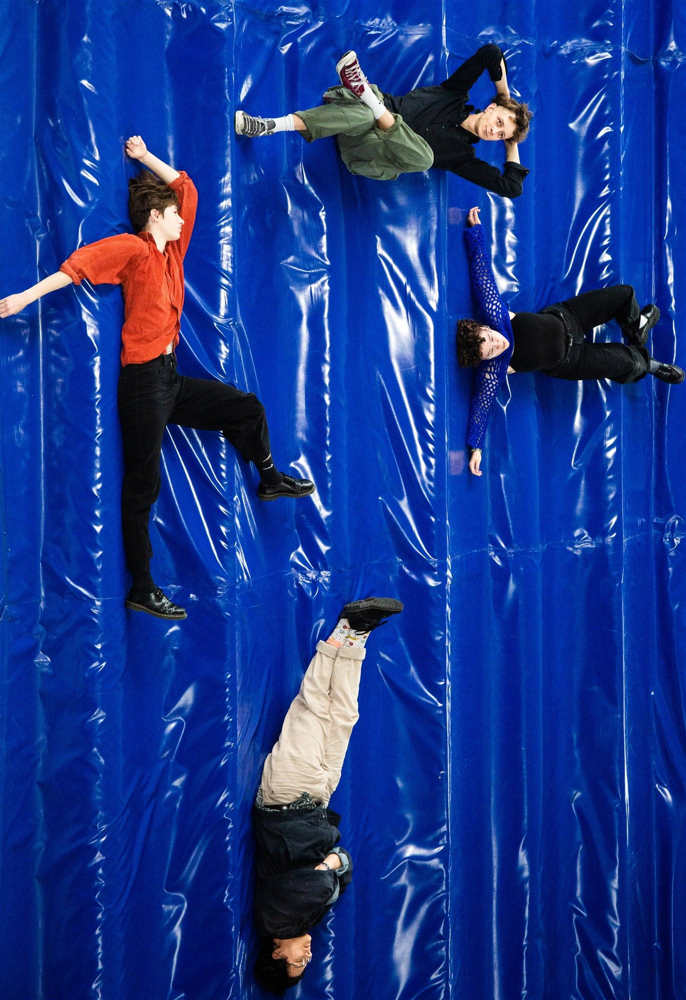
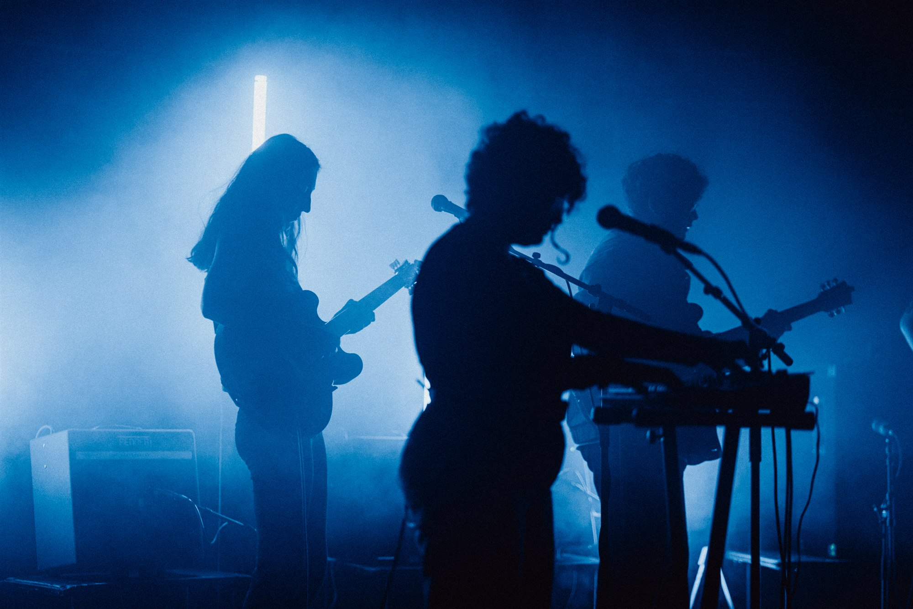
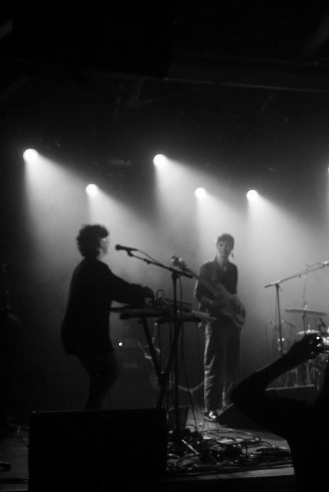

Artwork — Anna Frey
On record & on stage
Bands &
Live.
A band. A solo project.
Music, in different forms.
.JPG)
01 / Five-piece band
Bern · Lucerne
AANIM

Small rooms.
Close to you.
We’re a five-piece band, mainly active around Bern and Lucerne. We love cozy shows, small rooms, and being close to the audience.
We’ve released Contemplation / Remedy and Fuormas Neras, and played at Schüür, Mokka, and Gaskessel. I sing and play synths.
The five of us
- Nicoline Andrea Janka
- Vocals & synth
- Nils Stricker
- Drums & backing vocals
- Lucas Sevilla
- Guitar
- Nuria Kräuchi
- Bass
- Julia Süess
- Guitar & backing vocals
On record.
AANIM / Releases
Artwork — Nicoline and Nuria
In the room.
AANIM / Live
AANIM / Live performance Watch on YouTubeLive at Gaskessel

02 / Solo project
Nicoline Andrea Janka
Kim.a
Cold, direct,
beautiful and tearing.
Like the depths of the ocean, the calm before a storm, waking after a nightmare or a butterfly in the rain.
From the first word to the final sound
Kim.a press kit
Every part of the music is created by Nicoline Andrea Janka. I write and compose all songs and produce them in REAPER and Ableton Live. On stage, I perform with a live drummer.


From Neubad.
Kim.a / Live sessionsFor a closer look
Press & materials.
Explore the press kit for each project.